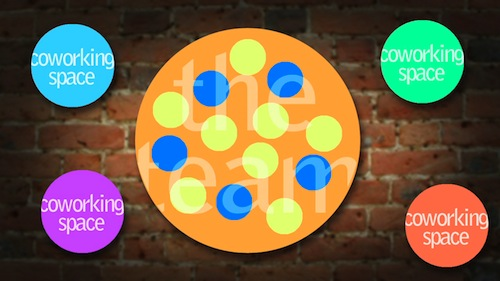

The Plan
| "The wiki helps with our SEO, sends us hot leads for membership inquiries
and endless drop ins. From the 80-100 referrals we get per month, we easily save
$250-$300 per month in CPC fees. Now imagine when it’s working optimally."
-- Toby Morning, Citizen Space |
 |
Phase 1: Project coordination team
We’re asking your help to fund this phase of the project – as
we organize and create structure. Help us raise $64,000 and
we will spend 12 months doing awesome shit. (link to donate)

Coordinator Roles
- Jacob Sayles, Project Coordinator
- Chelsea M, Operations
- Jonathan Yankovic, Directory
- Team Coordinator
Phase 2: Wiki Maintenance is Just the Beginning
Coworking spaces around the world will contribute a few hours
a week of a staff person’s time. After awhile, other coworking
spaces can get involved.

This team help with routine maintenance of the wiki – because
maintenance never stops!
More importantly, they will help newcomers use the wiki effectively
and feel welcome in the community. Their passion about coworking,
and perspectives from around the globe will help lead us into the
future.
Phase 3: Into the Future!

|
"Although currently it looks kind of like a disorganized mess, the wiki is my primary source for coworking info
-- from business plans to relevant software to people willing to serve as coworking mentors."
-- Will Bennis, Locus Workspace |
|